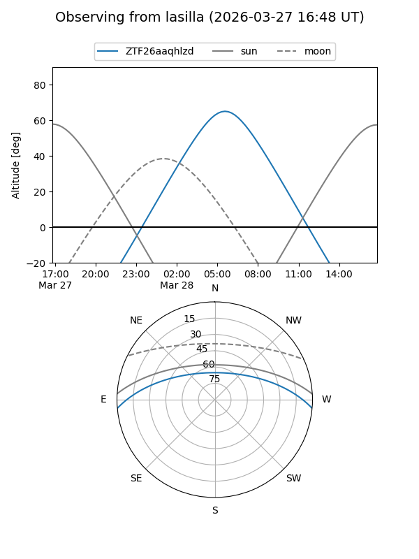
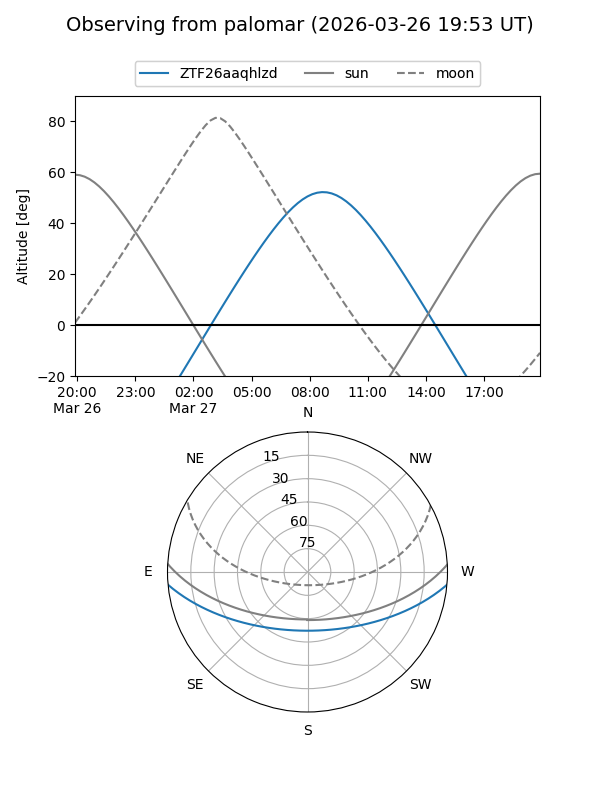

ZTF26aaqhlzd
Target ZTF26aaqhlzd at 2026-03-27 10:28
Aliases and brokers:
FINK: link
Lasair: link
ALeRCE: link
alt names
ZTF26aaqhlzd (ztf,fink_ztf)
Coordinates:
equatorial (ra, dec) = 197.9631,-4.24990
equatorial (HMS+DMS) = 13:11:51.13,-04:14:59.63
galactic (l, b) = (312.6338,+58.23678)
Flags:
Photometry:
last ztfg=17.74
1 ztfg detections
Lightcurve
Visibility


Additional plots